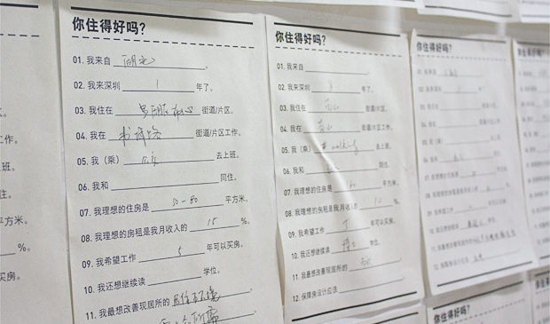

在没有去过深圳之前，向不少人打听过深圳的印象。各人反响褒贬不一，有喜欢的也有不感冒的。综合大家的意见，我们感觉深圳应该和北京这样的大城市差不多，大都市。过节期间终于有机会亲自去深圳走走，虽然时间很短，但终于能有个直观的感受。 首先南北方气候差异，在空气，绿化这些方面，深圳比北京好多了，这方面应该没什么争议。让我们觉得有点意外的是，虽然深圳北京都是大城市，大街道的感觉，但其城市建设看起来比北京好很多，如道路规划，路旁绿化，以及路面的整洁程度等，都比北京要好。买电子产品的华强北感觉也没北京中关村那么乱，中关村实在是没法让人舒心的逛的地方，但华强北我却还可以。
更奇怪的是我们在深圳逛的大半天，发现人流并不是很多。地铁里，大家的脚步节奏也比北京的慢半拍，于是稍微多了几分休闲。虽然后来有朋友提醒我们，说是可能春节假期没完全结束，但是只相隔一天，我们回到北京，地铁里早已是人挤人的熟悉场面和匆匆忙忙的脚步。另外深圳宽敞如深南大道这些马路，汽车似乎也不是很多，比北京平日随便某天都要好。加上路边树木的树荫，让我们逛起来还挺舒服。 相比之下深圳的优点很明显，劣势也很明显。我们当地的朋友说：“北京至少有北京小吃啊”。不只小吃，北京还有故宫，长城等等…对于深圳，短暂的历史便无法让人引以为豪。回来也听某老板说：“深圳都是做商业的，没有什么人文气息，还是北京有个性的艺术家多。”当然这些艺术活动氛围对于一般人的生活来说有多重要，只有每个人自己清楚。每个人喜欢适合的环境都不一样，能亲自走一趟比听很多的意见更有效果。
